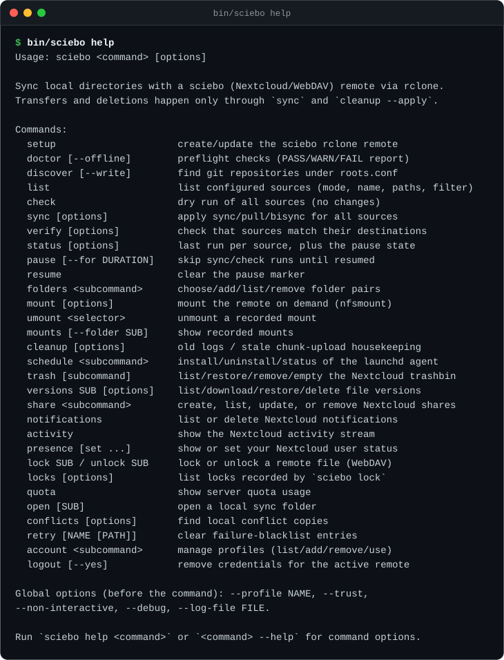
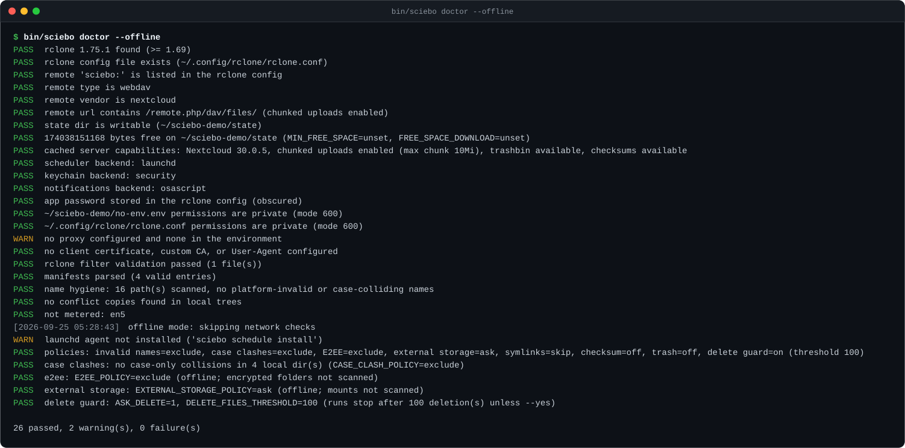
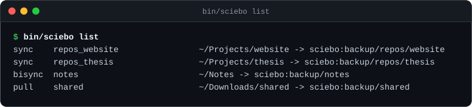
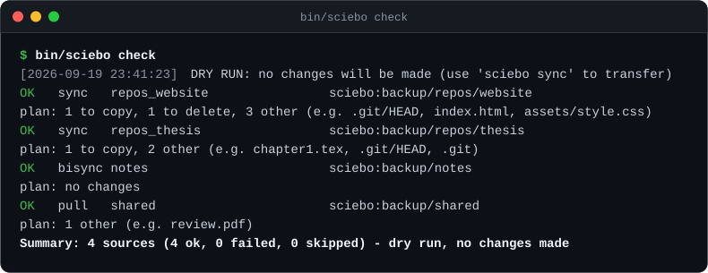
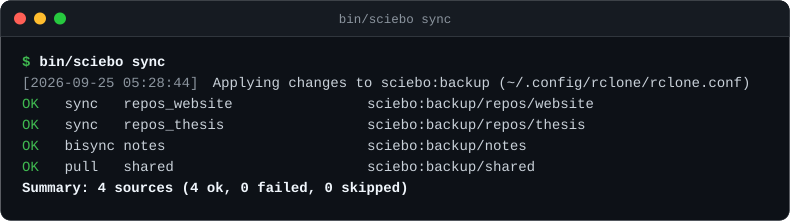
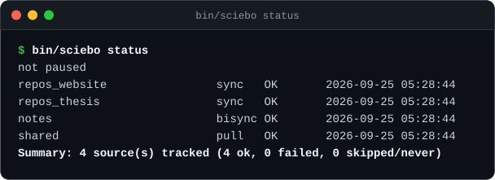
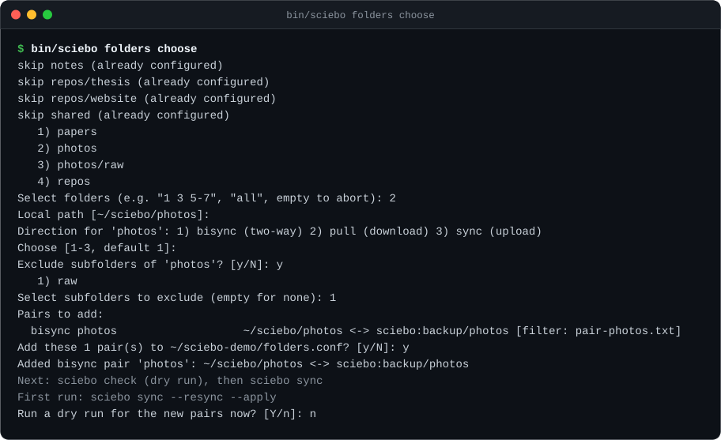

Screenshot tour
Every image below is real CLI output, captured against a temporary local
rclone remote and rendered to SVG. Regenerate it any time with
make screenshots.

sciebo help — one entrypoint, every job on one screen.
sciebo doctor --offline — preflight checks before anything talks to the network.
sciebo list — mode, name, local path, remote path, filter.
sciebo check — the whole plan as a dry run, with a plan: line per source.
sciebo sync — the same run, applied. Transfers go to rclone log files per source.
sciebo status — last run per source, plus the pause state.
sciebo folders choose — a Nextcloud-client-style picker, with per-pair filters (excludes or include-style selective sync).What it does
Small, careful, and boring in the ways that matter for a backup tool.
One direction per source
Upload, download, or two-way (sync / pull / bisync), set in a plain-text manifest or through the wizard.
Safe by default
check changes nothing; transfers only happen through sync and cleanup --apply, one run at a time via a lock. verify compares both sides without changing them.
Login flow and key storage
setup --login authenticates through the Nextcloud Login Flow in the browser; the app password goes to the platform key store by default (macOS Keychain, Linux secret-tool or pass), with the obscured rclone-config password as fallback.
Status and notifications
sciebo status shows the last run per source, pause/resume skip runs, and desktop notifications flag failures and conflict copies (macOS osascript, Linux notify-send).
Folder wizard
Browse the remote, multi-select folders, apply per-pair filters — exclude subfolders like node_modules/ or pick which ones to sync — and preview each new pair with a dry run.
Git-repo discovery
Scan ~/Projects for repositories, collapse nested ones, and write a generated manifest you can review.
Filters and .nosync
Global clutter rules plus per-pair filters, all validated by rclone's parser. A .nosync file skips a directory entirely.
Scheduling and mounts
A launchd agent (macOS) or systemd --user agent (Linux) runs a quiet sync daily, on an interval, with jitter, or when a watched path changes. On demand, sciebo mount exposes the remote as a filesystem via nfsmount — no macFUSE on macOS, and the kernel NFS client on Linux (usually root).
Quick start
You need macOS or Linux, Bash 5.3 or newer (macOS ships 3.2 as /bin/bash, so brew install bash and put it first on PATH), rclone 1.69 or newer, curl, and a sciebo account.
# 1. Get the code git clone https://github.com/sebastianspicker/rclone-sciebo-webdav.git && cd rclone-sciebo-webdav # 2. Connect your account — Login Flow in the browser, Keychain by default bin/sciebo setup --login # or: cp .env.example .env, then bin/sciebo setup # 3. Pick what to sync — edit config/sources.conf or browse the remote bin/sciebo folders choose # 4. Look first, then apply bin/sciebo doctor # preflight checks (--offline skips the network) bin/sciebo list # parsed sources at a glance bin/sciebo check # dry run, with a plan: line per source bin/sciebo sync # apply bin/sciebo status # last run per source
bin/sciebo sync --resync --apply. A resync can copy or delete files in
BOTH directions, so review a dry run with --resync first.
Commands
Several commands also have a matching make target (make help lists them), but the CLI below is the complete interface. Settings in config/settings.env and config/settings.local.env drive the safe-by-default policies, bandwidth caps, scheduling, and mounts. Full option tables and examples are in docs/commands.md.
| Group | Commands |
|---|---|
| Account & setup | setup · provision · account · logout · config |
| Sync | doctor · discover · list · check · sync · verify · status · pause · resume · watch · nextcloudcmd · edit · hydrate · ignored · filters · download · limit · unlimited · network · update |
| Folders & mounts | folders · mount · umount · mounts · open · conflicts |
| Server features | share · notifications · activity · presence · lock · unlock · locks · quota · file · search · recent · comments · favorites · tags · server · trash · versions · announcements · preview |
| Housekeeping & scheduling | cleanup · logs · schedule · support · retry |
Before you point it at anything important
- Git is not special-cased:
.git/is synced as files, so avoid syncing a repo while git is rewriting objects. - Don't run
bisyncon repositories you are actively working on. pulldeletions are permanent locally, and--resynccan delete in both directions.- Bisync conflict copies stay local by default (
CONFLICT_UPLOAD=0);conflicts --resolvereviews and resolves them, andkeep-bothrenames a copy so the next run uploads it. - Safe-by-default policies exclude non-portable names, local case-only collisions, and E2EE folders, and gate external storages and big folders; an apply that would delete more than
DELETE_FILES_THRESHOLDfiles stops unlesssync --yesis given. - Multi-account setups are supported through profiles (
--profile,account import). Not implemented: Nextcloud E2EE, a native file-provider/virtual-files overlay, and a background daemon or notify_push. - sciebo does not officially support WebDAV and offers no support for related issues. Keep backups.
The repository's README
is the full reference: configuration precedence, manifest format,
scheduling, mounts, housekeeping, and the compatibility shim for the
old scripts/sync.sh entrypoint. Settings are documented in
docs/settings.md.